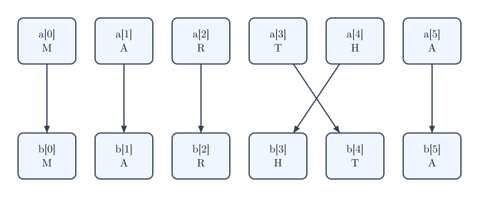
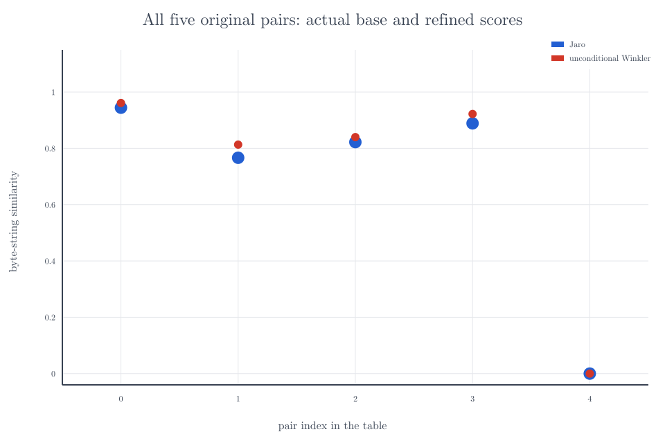
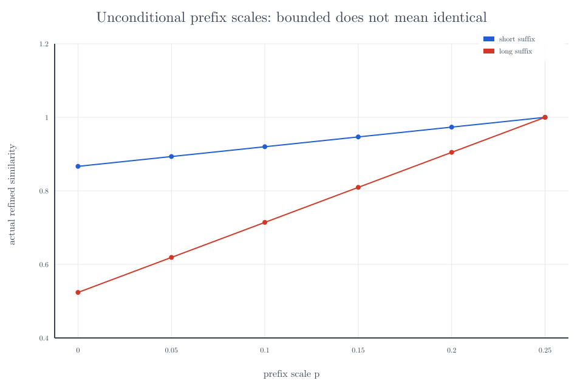
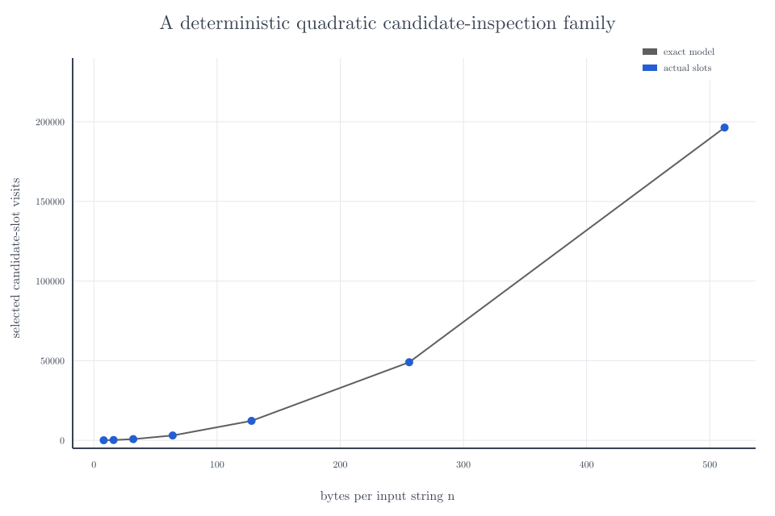
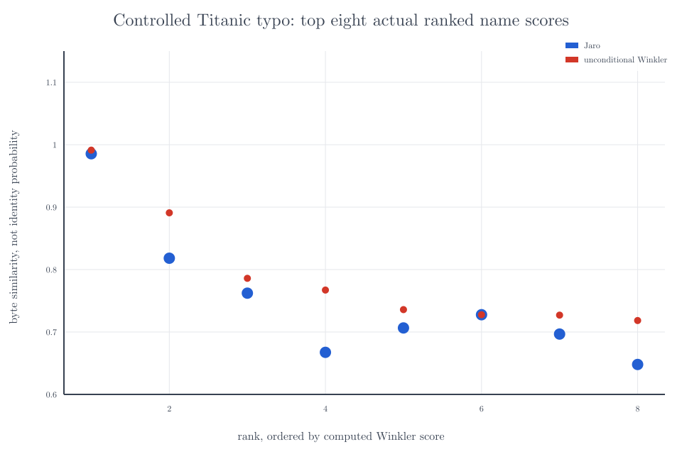

Jaro–Winkler: Actual Byte Matches and Prefix Effects
Abstract
Compare imperfectly agreeing names without requiring exact equality. Jaro scores one-to-one matches inside position windows and disagreement between matched sequences; the library's Winkler refinement adds an unconditional capped-prefix bonus. We inspect actual matches on MARTHA versus MARHTA, retain all five original pairs, test byte and scale conventions, measure a quadratic-work family and rank a controlled Titanic-name typo. A similarity is neither an identity probability nor a mathematical metric, and the input unit here is a byte.
Start with an actual six-byte transposition example
Both MARTHA and MARHTA have six bytes. Their window radius is two. Every byte finds an equal partner; the T and H partners cross. The later order-comparison pass does something different: it compares matched bytes in their own original index orders. The comparisons at zero-based indices three and four disagree, giving half-disagreement t=1. The common prefix MAR has length three. The diagram edges and both tables below come from the single producing trace.
#include <dm/dm.hpp>
int main() {
std::filesystem::create_directories("build");
const auto t = dm::algorithms::jaro_winkler_trace("MARTHA", "MARHTA");
std::print("| accepted first index | byte | accepted partner index | byte |\n| ---: | --- | ---: | --- " "|\n");
for (const auto &e : t.events)
if (e.phase == dm::algorithms::JaroWinklerPhase::Candidate &&
e.compared && e.equal)
std::print("| {} | {} | {} | {} |\n", e.first_index,
char(e.first_byte), e.second_index, char(e.second_byte));
std::print("\n| order first index | byte | order second index | byte | equal |\n| ---: | --- | ---: | " "--- | --- |\n");
for (const auto &e : t.events)
if (e.phase == dm::algorithms::JaroWinklerPhase::Order)
std::print("| {} | {} | {} | {} | {} |\n", e.first_index,
char(e.first_byte), e.second_index, char(e.second_byte),
e.equal);
std::print("Window {}, matches {}, order disagreements {}, prefix {}; Jaro {:.12f}, Winkler {:.12f}.\n",
t.run.window, t.run.matches, t.run.order_mismatches,
t.run.prefix, t.run.jaro, t.run.winkler);
dm::algorithms::jaro_winkler_match_diagram(t).save_svg("build/jaro_tiny.svg");
}| accepted first index | byte | accepted partner index | byte |
|---|---|---|---|
| 0 | M | 0 | M |
| 1 | A | 1 | A |
| 2 | R | 2 | R |
| 3 | T | 4 | T |
| 4 | H | 3 | H |
| 5 | A | 5 | A |
| order first index | byte | order second index | byte | equal |
|---|---|---|---|---|
| 0 | M | 0 | M | true |
| 1 | A | 1 | A | true |
| 2 | R | 2 | R | true |
| 3 | T | 3 | H | false |
| 4 | H | 4 | T | false |
| 5 | A | 5 | A | true |
Window 2, matches 6, order disagreements 2, prefix 3; Jaro 0.944444444444, Winkler 0.961111111111.

Derive the score and distinguish the two pairings
For nonempty strings of byte lengths n and m, the retained greedy rule scans first-string indices left to right. Each takes the leftmost unoccupied equal second-string byte within
Let M be the number of accepted partners. Mark both matched index sets, traverse each in its own increasing index order, and let h be their number of unequal byte comparisons. When M>0,
A disagreement count need not be even: ABCDEF versus BCADEF has six matches and three order disagreements, so t=1.5 and J=11/12. This t is an algebraic half-disagreement count, not a minimum number of adjacent edits or swaps. For MARTHA/MARHTA, M=6 and h=2 give J=17/18. All three terms are in [0,1], so the base score is bounded. With no accepted partners the score is zero; equal bytes occurring outside the windows do not contribute. Both empty strings are assigned one, and exactly one empty string is assigned zero by convention.
With capped common byte-prefix length L<=4 and finite scale p in [0,0.25], the library uses the unconditional refinement
This proves J<=W<=1 because0<=Lp<=1. At the default p=0.1 the MAR prefix adds 1/60, yielding W=173/180. There is no boost-threshold parameter in this API; other implementations may withhold the bonus below a base-score threshold. At p=0.25, sharing four bytes forces W=1 even for different suffixes, so the upper endpoint of the supported scale domain can collapse unequal strings. Invalid, infinite and NaN scales now throw before allocation instead of producing unbounded or nonfinite values. Default and other valid-scale arithmetic is retained.
Retain all five original pairs
These are the exact original spellings, order and cases. The two measures coincide for the disjoint pair because it has no matched byte or common prefix. The plot uses actual single-pass results; the numeric pair index refers to the table rather than implying a calibrated relationship between different pairs.
#include <dm/dm.hpp>
int main() {
std::filesystem::create_directories("build");
const auto pairs = dm::algorithms::jaro_winkler_name_pairs();
std::vector<double> index, jaro, winkler;
std::print("| pair index | first | second | matches | order disagreements | prefix | Jaro | Winkler " "|\n| ---: | --- | --- | ---: | ---: | ---: | ---: | ---: |\n");
for (std::size_t i = 0; i < pairs.size(); ++i) {
const auto & [a, b] = pairs[i];
const auto r = dm::algorithms::jaro_winkler_run(a, b);
std::print("| {} | {} | {} | {} | {} | {} | {:.12f} | {:.12f} |\n", i,
a, b, r.matches, r.order_mismatches, r.prefix, r.jaro,
r.winkler);
index.push_back(double(i));
jaro.push_back(r.jaro);
winkler.push_back(r.winkler);
}
auto p = dm::graphics::RPlot::create();
p.points(index, jaro, "Jaro", {35, 95, 210}, 9).points(index, winkler,
"Winkler",
{210, 55, 40}, 6).legend({"Jaro", "unconditional Winkler"}, {{35, 95, 210}, {210, 55, 40}}).title("All five original pairs: actual base and refined scores").x_label("pair index in the table").y_label("byte-string similarity").xlim(-.5, 4.5).ylim(-.04, 1.15).save_svg("build/jaro_original.svg");
}| pair index | first | second | matches | order disagreements | prefix | Jaro | Winkler |
|---|---|---|---|---|---|---|---|
| 0 | MARTHA | MARHTA | 6 | 2 | 3 | 0.944444444444 | 0.961111111111 |
| 1 | DIXON | DICKSONX | 4 | 0 | 2 | 0.766666666667 | 0.813333333333 |
| 2 | DWAYNE | DUANE | 4 | 0 | 1 | 0.822222222222 | 0.840000000000 |
| 3 | MARTHA | MARDHA | 5 | 0 | 3 | 0.888888888889 | 0.922222222222 |
| 4 | abcde | fghij | 0 | 0 | 0 | 0.000000000000 | 0.000000000000 |

Controls: windows, bytes, scales and the metric claim
AB and BA have the same multiset of bytes but window zero, so their base score is zero. Case is significant: MARTHA and martha have no equal byte. Embedded NUL is an ordinary byte, not a terminator. The UTF-8 encodings C3A9 and C3AA represent different code points but share their leading byte, giving this byte-based implementation a positive score. No Unicode decoding, normalization, case folding, accent removal or tokenization is performed.
An especially clear metric counterexample uses A, AA and BA. If distance is one minus Jaro, d(A,BA)=1 but d(A,AA)+d(AA,BA)=1/6+1/3=1/2. The triangle inequality fails. The prefix-refined distance fails on the same triple. A bounded similarity therefore does not justify metric indexing or an identity probability interpretation.
The two scale curves also expose the unconditional policy. Four shared bytes followed by ten unrelated suffix bytes produce J below0.7, yet still receive a prefix bonus. The short different-suffix pair and this low-base pair both reach one at p=0.25. That is the stated convex-combination rule, not evidence of identity.
#include <dm/dm.hpp>
int main() {
std::filesystem::create_directories("build");
const std::vector<std::tuple<std::string, std::string, std::string>> cases{
{"same bytes outside windows", "AB", "BA"},
{"case difference", "MARTHA", "martha"},
{"two distinct UTF-8 code points", "\xC3\xA9", "\xC3\xAA"},
{"embedded NUL", std::string("A\0B", 3), std::string("A\0C", 3)},
{"empty convention", "", ""},
{"odd disagreement count", "ABCDEF", "BCADEF"}
};
std::print("| control | window | matches | order disagreements | prefix | Jaro | Winkler |\n| --- | " "---: | ---: | ---: | ---: | ---: | ---: |\n");
for (const auto & [label, a, b] : cases) {
const auto r = dm::algorithms::jaro_winkler_run(a, b);
std::print("| {} | {} | {} | {} | {} | {:.12f} | {:.12f} |\n", label,
r.window, r.matches, r.order_mismatches, r.prefix, r.jaro,
r.winkler);
}
const double direct = 1 - dm::algorithms::jaro_similarity("A", "BA");
const double through =
(1 - dm::algorithms::jaro_similarity("A", "AA")) + (
1 - dm::algorithms::jaro_similarity("AA", "BA"));
std::print("Metric counterexample: direct distance {:.12f}, sum via AA {:.12f}.\n",
direct, through);
std::vector<double> scales, short_score, low_score;
std::print("\n| scale | short different suffix | long unrelated suffix |\n| ---: | ---: | ---: |\n");
for (int i = 0; i <= 5; ++i) {
const double scale = .05 * i;
scales.push_back(scale);
short_score.push_back(dm::algorithms::jaro_winkler_similarity("ABCDx",
"ABCDy",
scale));
low_score.push_back(dm::algorithms::jaro_winkler_similarity(
"ABCDxxxxxxxxxx", "ABCDyyyyyyyyyy", scale));
std::print("| {:.2f} | {:.12f} | {:.12f} |\n", scale,
short_score.back(), low_score.back());
}
bool invalid = false, bytes = false, events = false;
try {
(void) dm::algorithms::jaro_winkler_similarity("", "",
std::numeric_limits<
double>::quiet_NaN());
} catch (const std::invalid_argument &) {
invalid = true;
}
try {
(void) dm::algorithms::jaro_winkler_trace("A", "A", .1, {1, 0});
} catch (const std::length_error &) {
bytes = true;
}
try {
(void) dm::algorithms::jaro_winkler_trace("A", "A", .1, {2, 2});
} catch (const std::length_error &) {
events = true;
}
std::print("Invalid scale rejected: {}. Complete-byte cap rejected: {}. Two-event cap rejected before " "the third inspection: {}.\n",
invalid, bytes, events);
if (!invalid || !bytes || !events)
throw std::runtime_error("control mismatch");
auto p = dm::graphics::RPlot::create();
p.line(scales, short_score, "short suffix", {35, 95, 210}, 2).points(
scales, short_score, "short suffix", {35, 95, 210}, 4).line(
scales, low_score, "long suffix", {210, 55, 40}, 2).points(
scales, low_score, "long suffix", {210, 55, 40}, 4).legend(
{"short suffix", "long suffix"}, {{35, 95, 210}, {210, 55, 40}}).title(
"Unconditional prefix scales: bounded does not mean identical").x_label(
"prefix scale p").y_label("actual refined similarity").ylim(.4, 1.2).save_svg("build/jaro_controls.svg");
}| control | window | matches | order disagreements | prefix | Jaro | Winkler |
|---|---|---|---|---|---|---|
| same bytes outside windows | 0 | 0 | 0 | 0 | 0.000000000000 | 0.000000000000 |
| case difference | 2 | 0 | 0 | 0 | 0.000000000000 | 0.000000000000 |
| two distinct UTF-8 code points | 0 | 1 | 0 | 1 | 0.666666666667 | 0.700000000000 |
| embedded NUL | 0 | 2 | 0 | 2 | 0.777777777778 | 0.822222222222 |
| empty convention | 0 | 0 | 0 | 0 | 1.000000000000 | 1.000000000000 |
| odd disagreement count | 2 | 6 | 3 | 0 | 0.916666666667 | 0.916666666667 |
Metric counterexample: direct distance 1.000000000000, sum via AA 0.500000000000.
| scale | short different suffix | long unrelated suffix |
|---|---|---|
| 0.00 | 0.866666666667 | 0.523809523810 |
| 0.05 | 0.893333333333 | 0.619047619048 |
| 0.10 | 0.920000000000 | 0.714285714286 |
| 0.15 | 0.946666666667 | 0.809523809524 |
| 0.20 | 0.973333333333 | 0.904761904762 |
| 0.25 | 1.000000000000 | 1.000000000000 |
Invalid scale rejected: true. Complete-byte cap rejected: true. Two-event cap rejected before the third inspection: true.

Count work and derive a quadratic control
An occupied candidate slot is visited but performs no byte equality test. Once matching ends, the order pass performs one byte comparison per matched first index. The prefix pass performs at most four comparisons, including the first mismatch when present. These are selected logical operations, not timings or physical memory/cache access counts.
For strings consisting of n copies of A and n copies of B, no slot is occupied and every candidate fails. For an equal even length, w=n/2−1. Summing the clipped window lengths gives
There are no order comparisons and exactly one failed prefix comparison. This is a deterministic quadratic worst-case work control, not a runtime benchmark. General work is O(n+m+n*min(m,2w+1)) and flag workspace O(n+m). Recording adds O(E+n+m) owned data for E actual events and copied input bytes; an event limit is useful because the history can be quadratic too.
#include <dm/dm.hpp>
int main() {
std::filesystem::create_directories("build");
std::vector<double> nvalues, actual, formula;
std::print("| bytes per string | actual candidate slots | exact window sum | actual byte tests | order " "tests | prefix tests |\n| ---: | ---: | ---: | ---: | ---: | ---: |\n");
for (std::size_t n = 8; n <= 512; n *= 2) {
const auto r =
dm::algorithms::jaro_winkler_run(std::string(n, 'A'),
std::string(n, 'B'));
const auto expected = (3 * n * n - 2 * n) / 4;
std::print("| {} | {} | {} | {} | {} | {} |\n", n,
r.work.candidate_slots, expected,
r.work.candidate_byte_tests, r.work.order_byte_tests,
r.work.prefix_byte_tests);
if (r.work.candidate_slots != expected)
throw std::runtime_error("window-count identity");
nvalues.push_back(double(n));
actual.push_back(double(r.work.candidate_slots));
formula.push_back(double(expected));
}
auto p = dm::graphics::RPlot::create();
p.line(nvalues, formula, "exact window sum", {95, 95, 95}, 2).points(
nvalues, actual, "actual slots", {35, 95, 210}, 5).legend(
{"exact model", "actual slots"}, {{95, 95, 95}, {35, 95, 210}}).title(
"A deterministic quadratic candidate-inspection family").x_label(
"bytes per input string n").y_label("selected candidate-slot visits").ylim(-5000, 240000).save_svg("build/jaro_work.svg");
}| bytes per string | actual candidate slots | exact window sum | actual byte tests | order tests | prefix tests |
|---|---|---|---|---|---|
| 8 | 44 | 44 | 44 | 0 | 1 |
| 16 | 184 | 184 | 184 | 0 | 1 |
| 32 | 752 | 752 | 752 | 0 | 1 |
| 64 | 3040 | 3040 | 3040 | 0 | 1 |
| 128 | 12224 | 12224 | 12224 | 0 | 1 |
| 256 | 49024 | 49024 | 49024 | 0 | 1 |
| 512 | 196352 | 196352 | 196352 | 0 | 1 |

Rank a controlled typo in actual Titanic names
The canonical Titanic DataFrame contains891 passenger rows. Its Name column comes from the documented source CSV. All891 Name bytes and their order were checked against both the repository CSV and that upstream source. The query Braund, Mr. Oewn Harris deliberately swaps two letters in the name on original row zero. This creates one known source record by construction; it does not provide a labelled entity-resolution test set or assess false-link rates.
The native ranking helper admits the complete candidate count and total query plus all-name bytes before scoring. It scores every candidate once, then sorts by the actual computed refined score, breaking exact score ties by original row index. Equal printed decimals need not be exact computed ties. Returning eight rows does not mean it only inspected eight input names. No punctuation/title handling, case folding, tokenization or probabilistic calibration is fitted.
#include <dm/dm.hpp>
int main() {
std::filesystem::create_directories("build");
const auto passengers = dm::datasets::titanic();
const auto &names = passengers.get_column<std::string>("Name").values();
if (names.at(0) != "Braund, Mr. Owen Harris")
throw std::runtime_error("source row zero changed");
const std::string query = "Braund, Mr. Oewn Harris";
const auto rows = dm::algorithms::jaro_winkler_rank(names, query, 8);
std::print("Query: {}. Complete candidates {}.\n", query, names.size());
std::print("| rank | original row | candidate name | Jaro | Winkler | prefix bytes |\n| ---: | ---: | " "--- | ---: | ---: | ---: |\n");
std::vector<double> ranks, jaro, winkler;
for (std::size_t i = 0; i < rows.size(); ++i) {
const auto &row = rows[i];
std::print("| {} | {} | {} | {:.12f} | {:.12f} | {} |\n", i + 1,
row.index, row.value, row.score.jaro, row.score.winkler,
row.score.prefix);
ranks.push_back(double(i + 1));
jaro.push_back(row.score.jaro);
winkler.push_back(row.score.winkler);
}
if (rows.front().index != 0)
throw std::runtime_error("controlled typo did not recover source first");
bool cap = false;
try {
(void) dm::algorithms::jaro_winkler_rank(names, query, 1, .1, {890, 0});
} catch (const std::length_error &) {
cap = true;
}
std::print("Returning one result still rejects a complete candidate cap of890: {}.\n",
cap);
if (!cap)
throw std::runtime_error("incomplete ranking admission");
auto p = dm::graphics::RPlot::create();
p.points(ranks, jaro, "Jaro", {35, 95, 210}, 8).points(ranks, winkler,
"Winkler",
{210, 55, 40}, 5).legend({"Jaro", "unconditional Winkler"}, {{35, 95, 210}, {210, 55, 40}}).title("Controlled Titanic typo: top eight actual ranked name scores").x_label("rank, ordered by computed Winkler score").y_label("byte similarity, not identity probability").ylim(.6, 1.15).save_svg("build/jaro_titanic.svg");
}Query: Braund, Mr. Oewn Harris. Complete candidates 891.
| rank | original row | candidate name | Jaro | Winkler | prefix bytes |
|---|---|---|---|---|---|
| 1 | 0 | Braund, Mr. Owen Harris | 0.985507246377 | 0.991304347826 | 4 |
| 2 | 477 | Braund, Mr. Lewis Richard | 0.818169336384 | 0.890901601831 | 4 |
| 3 | 225 | Berglund, Mr. Karl Ivar Sven | 0.762192316540 | 0.785973084886 | 1 |
| 4 | 221 | Bracken, Mr. James H | 0.667391304348 | 0.767173913043 | 3 |
| 5 | 657 | Bourke, Mrs. John (Catherine) | 0.706484992798 | 0.735836493518 | 1 |
| 6 | 197 | Olsen, Mr. Karl Siegwart Andreas | 0.727664950420 | 0.727664950420 | 0 |
| 7 | 883 | Banfield, Mr. Frederick James | 0.696681071229 | 0.727012964106 | 1 |
| 8 | 194 | Brown, Mrs. James Joseph (Margaret Tobin) | 0.647951769373 | 0.718361415498 | 2 |
Returning one result still rejects a complete candidate cap of890: true.

Ownership, limits, reference and scope
Scalar legacy functions retain their signatures and valid-scale operation order. Complete score comparisons against the frozen implementation are bitwise equal for the verified control corpus. Finite scales in[0,0.25] are now enforced for all Winkler calls, including empty inputs. The pure Jaro function omits prefix comparisons. Overflow-safe window endpoints replace the old unchecked index sum. No function changes caller strings or retains caller references.
Run/trace options default to one million combined input bytes and one million actual event records. Complete byte admission precedes flags and trace input copies. An event is admitted before the candidate, order or prefix inspection; no partial history returns if a limit or allocation fails. Zero disables an optional cap; size/container/counter checks remain. Untraced calls ignore the event ceiling, and legacy scalar functions disable optional caps. The byte cap counts each borrowed input once even though a trace owns a copy; it is not a total allocation quota. Working flags, scalar summaries, capacities and byte/peak RAM are excluded. Empty-input score conventions bypass flag work.
Rank defaults admit up to10000 candidates and one million total query/name bytes. k=0 still validates complete input but performs no scoring. Duplicate names remain different rows, and returned names/scores are owned. Ranking adds O(N log N) comparisons and O(N plus longest-pair length) working storage to all pair-scoring costs, plus owned top-k name copies. There is no score replay or shared mutable state. The diagram has a separate complete byte display quota and validates displayed accepted edges; it does not certify the provenance of an edited history.
Winkler's original1990 paper discusses prefix-adjusted string comparators and distinguishes comparator values from a complete record-linkage decision procedure. Its string-comparator and weighting context was inspected directly. This report states the library's specific longer-length window, greedy byte rule and linear unconditional prefix formula, rather than claiming agreement with every historical or thresholded variant. The Jaro1989 reference is Advances in Record-Linkage Methodology as Applied to Matching the1985 Census of Tampa, Florida, JASA84(406),414–420.
The original pair scores are preserved, the work model matches every measured point, and the constructed Titanic typo ranks its source first. The byte, prefix and triangle controls explain why none of those outcomes establishes Unicode-aware matching, a metric distance or calibrated entity identity.
Verification
Twenty-two selected native cases pass CTest and AddressSanitizer plus UndefinedBehaviorSanitizer. This includes43923 exhaustive byte-string/scale traces over NUL, A and FF, exact accepted partners and ordered comparisons, odd disagreement counts, UTF-8/NUL/empty controls, scale saturation/rejection, input/event/ranking caps, ownership, graphics and the existing string-metric suite. Frozen-code comparisons preserve712480 scalar score results bitwise on142496 input pairs, covering four valid prefix scales and base Jaro.
An independent rational-score and event oracle checks15682 input pairs and all654158 actual events, including25614 occupied candidate skips and41 pairs with odd disagreement counts. It verifies complete candidate/order/prefix chronology, counts and every quadratic-control result. The full891-name ranking is independently reproduced using verified score ingredients and the specified binary-double arithmetic for sorting; exact ties use original row order. All891 source names match the canonical CSV and upstream bytes/order. The verification does not infer entity-resolution accuracy from this constructed typo.
All55 module/helper definitions are documented, fifteen public examples compile and run, and four representative clangd hovers pass. The checks cover these byte-based rules and experiments, not every Jaro/Winkler variant or the complete historical report corpus.